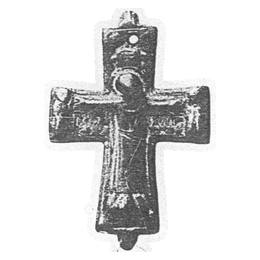

Catalog › CE-0137 · KHA1900-275
Cruce-encolpion de bronz, lucrare grecească, cu Hristos în tunică și inscripții grecești
X–XI в. (901–1100) · Oster (Остёръ), gubernia Cernigov, Ucraina · Colecția B. I. și V. N. Khanenko, Kiev, inv. nr. 275 (numerotarea colecției Khanenko)
double-sided reliquary cross (enkolpion), bronz; X–XI в. (901–1100); found at Oster (Остёръ), gubernia Cernigov, Ucraina; kept at Colecția B. I. și V. N. Khanenko, Kiev.


Identificare
- Categorie
- Encolpion bivalv (relicvar)
- Material
- Bronz
- Tehnică
- Turnare în relief
Iconografie
- Avers
- Răstignirea (Hristos în colobium)
- Descriere avers
- Cruce-encolpion de bronz, lucrare grecească; în mijloc Mântuitorul răstignit (unicat), în tunică lungă până la picioare; deasupra crucii soarele și luna; la capetele traversei două figuri: Maica Domnului și Ioan Teologul, cu inscripții grecești.
- Inscripții
- Maica Domnului: ΙΔΕ Ο ΥΙΟΣ ΣΟΥ („iată fiul tău”); Ioan Teologul: ΙΔΟΥ Η ΜΗΤΗΡ ΣΟΥ („iată mama ta”)
- Limba
- Greacă
Datare și atribuire
- Datare
- X–XI в. (901–1100)
- Centru
- Necunoscut
Descoperire
- Localitate
- Oster (Остёръ)
- Regiune
- gubernia Cernigov
- Țară
- Ucraina
- Context
- Necunoscut
- Coordonate
- 50.9508° N, 30.8782° E
- Precizia locului
- Doar localitatea
Păstrare și referințe
- Colecție
- Colecția B. I. și V. N. Khanenko, Kiev
- Nr. inventar
- nr. 275 (numerotarea colecției Khanenko)
- Bibliografie
- B. I. și V. N. Khanenko, Древности русскія. Кресты и образки, вып. II (Собраніе Б. И. и В. Н. Ханенко), Kiev, 1900 [Khanenko 1900], cat. nr. 275, Tabl. XXIV, reprodusă la Табл. XXIV, fig. 275 (planșa de la p. 27 a PDF-ului).
- Figura
- Табл. XXIV, fig. 275
- Planșe
- Khanenko 1900, Табл. XXIV (planșă fără paginație tipărită; p. 27 în PDF)
- Observații
- Datare după Khanenko: X–XI в. În prefață sursa îl numără printre piesele „corsunene” (cu inscripții grecești). Inscripțiile grecești sunt date în sursă în caractere decorative; aici în formă normalizată. Coordonate: ale localității (aproximative), nu date în sursă.
Citare: Corpus Encolpiorum, CE-0137, Cruce-encolpion de bronz, lucrare grecească, cu Hristos în tunică și inscripții grecești, https://vitaliejosanu1979-ux.github.io/primul-meu-proiect/piese/KHA1900-275/ (accesat 2026-10-17).